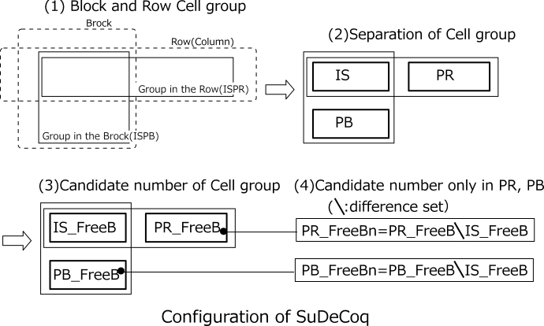
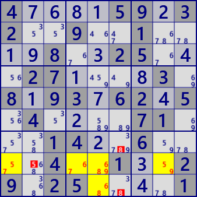
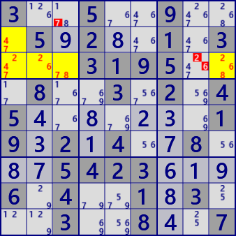

SueDeCoq
SueDeCoq is an analysis algorithm derived from the handle name "SueDeCoq" which first proposed this method.
In order to understand SueDeCoq algorithm, some leap is necessary. Explain step by step using examples.
Many of the explanations here are based on the following HP.
http://hodoku.sourceforge.net/en/tech_misc.php#sdc
The following example is a basic SueDeCoq. In the left figure,
(1)Focus on r2c46 in block 2. There are four candidate numbers #1789 in these two cells,
and candidate number #78 is in r1c5 of the same block.
Considering these three cells together,
#19(78) is entered into the two cells of r2c46 (r2c46 is only one of #78 and not both).
(2)Considering the second line, since r2c9 has candidate number #19,
#(19)78 will be included in 2 cells of r2C46 (r2c46 is only one of #19 and not both ).
When (1) and (2) are combined, #(19)(78) will be included in r2c46,
and r2c46 is Locked of 2 numbers in 2 cells.
However, one of the two number pairs is not decided.
In this state, #1 of r2c3 on the second is false
because it breaks the Locked of the cell r2c46 in relation to r2c9 (the number entering r2c46 is insufficient).
Likewise, #8 of r1c4 in block 2 breaks Locked of the cells r2c46 in relation to r1c5,
so it can not be inserted (r1c4=#8 is false).
In the figure on the right, Focus on r3c123 in block 1.
There are five candidate #12456 in these three cells.
Considering the same as the left figure, r3c123 is Locked at #6(15)(24) (3 numbers for 3 cells).
Therefore #24 of r3c67 breaks this Locked state(not enough numbers to enter r3c123),
so it can be excluded from candidate numbers.
.2...3..4.4....25.6...243.8256..8....8..9..2....2..4868.463...2.63....4.9..7...6.
87........9.81.65....79...8.....67316..5.1..97124.....3...57....57.48.1........74
With reference to the concrete example above, Locked of SueDeCoq is defined.
The following figure shows the configuration of the cell group appearing here.
(1)There is a cell group(ISPB) in the block and a cell group(ISPR) in the row (or column).
(2)The two cell groups are divided into a common part(IS) and other parts(PB and PR).
(3)The candidate digits of the disassembled cell group are IS_FreeB, PB_FreeB, PR_FreeB.
(4)PB_FreeBn, PR_FreeBn are candidate numbers of non-common parts (PB and PR).
(PB_FreeBn = PB_FreeB\IS_FreeB, PR_FreeBn = PR_FreeB\IS_FreeB \：Difference set)
(5)N is the number of candidate numbers in only the other part. (N=|PB_FreeBn|+|PR_FreeBn|)

Using these definitions, the analysis algorithm of SueDeCoq is
[1]In order for SueDeCoq to be established, Locked must be established first.
- The number of cells of the common part IS is 2 or 3.
- The other parts (PB, PR) are not empty.
- There is no common candidate for common part and other parts (PB and PR).
- |IS| = |IS_FreeB| - (|PB|+|PR|-N） (|A| is the number of elements of set A）
The preceding example is for N = 0. Candidate numbers in PR and PB are common to IS, and the number of candidate in IS is equal to the number of cells.
When N = 1, one candidate number not included in IS is added to PR (or PB), but at the same time, the number of PR (PB) cells is incremented by one. The number of unique candidates adjusts the number of cells.
Likewise, if N increases, the number of cells correspondingly increases, which is the condition of Locked.
[2]When Locked is established, find the cell/candidate number that breaks Locked.
In the first example, it is as follows.
・There are 4 candidate numbers for the cells(=2) in the common part.
・In the cell outside the block, there are two same candidate numbers as the common part,
and one candidate of the common part is restricted.
・Similarly, the cells in the block limit one of the candidate numbers of the common part.
・Other parts There are no unique candidate numbers for rows and blocks(N=0).
Therefore, the condition("2=4-1-1 + 0") is established and is Locked.
Here is an example of SueDeCoq with many cells.
 
4....59.32..9..1....8..25...27....3.8.93.62.5.4....71...14..6....4..1..29.25....1
3..5..9...5.2..1.3...3195...8..3.2.45.......19.2.4..8...5423...6.4..1.3...3..8..7
.......12..4..67.8.3718..5.645..1...7.......5...9..647.7..3926.5.34..8..42.......
342...5.........72.9.....1.1396..785684..9123275183..6.27....5.9532.8.4...19..2..
SueDeCoq program
It is the code of the arugorithm as described above.
A group of cells with the number of candidates larger than the number of cells by N(≧1) is
created using the ALS management class.
public partial class AALSTechGen: AnalyzerBaseV2{
private int GStageMemo;
private ALSLinkMan fALS;
public AALSTechGen( GNPX_AnalyzerMan pAnMan ): base(pAnMan){
fALS = new ALSLinkMan(pAnMan);
}
public bool SueDeCoq( ){
if(pAnMan.GStage!=GStageMemo){
GStageMemo=pAnMan.GStage;
fALS.Initialize();
fALS.PrepareALSLinkMan(+2); //Generate ALS(+1 & +2)
}
if( fALS.ALSLst.Count<=3 ) return false;
foreach( var ISPB in fALS.ALSLst.Where(p=> p.tfx>=18 && p.Size>=3) ){ //Selecte Block-type ALS
if( ISPB.rcbRow.BitCount()<=1 || ISPB.rcbCol.BitCount()<=1 ) continue;//Block squares have multiple rows and columns
foreach( var ISPR in fALS.ALSLst.Where(p=> p.tfx<18 && p.Size>=3) ){ //Selecte Row-type/Column-type ALS
if( (ISPR.rcbBlk&ISPB.rcbBlk)==0 ) continue; //Intersect with ISPB
if( ISPR.rcbBlk.BitCount()<2 ) continue; //ISPR has multiple blocks
//Are the cell configurations of the intersections the same?
if( (ISPB.B81&HouseCells[ISPR.tfx]) != (ISPR.B81&HouseCells[ISPB.tfx]) ) continue;
Bit81 IS = ISPB.B81&ISPR.B81; //Intersection
if( IS.Count<2 ) continue; //At least 2 cells at the intersection
if( (ISPR.B81-IS).Count==0 ) continue; //There is a part other than the intersecting part in ISPR
Bit81 PB = ISPB.B81-IS; //ISPB's outside IS
Bit81 PR = ISPR.B81-IS; //ISPR's outside IS
int IS_FreeB = IS.AggregateFreeB(pBDL); //Intersection number
int PB_FreeB = PB.AggregateFreeB(pBDL); //ISPB's number outside the IS
int PR_FreeB = PR.AggregateFreeB(pBDL); //ISPR's number outside the IS
if( (IS_FreeB&PB_FreeB&PR_FreeB)>0 ) continue;
//A.DifSet(B)=A-B=A&(B^0x1FF)
int PB_FreeBn = PB_FreeB.DifSet(IS_FreeB); //Numbers not at the intersection of PB
int PR_FreeBn = PR_FreeB.DifSet(IS_FreeB); //Numbers not in the intersection of PR
int sdqNC = PB_FreeBn.BitCount()+PR_FreeBn.BitCount(); //Number of confirmed numbers outside the intersection
if( (IS_FreeB.BitCount()-IS.Count) != (PB.Count+PR.Count-sdqNC) ) continue;
int elmB = PB_FreeB | IS_FreeB.DifSet(PR_FreeB); //Exclusion Number in PB
int elmR = PR_FreeB | IS_FreeB.DifSet(PB_FreeB); //Exclusion Number in PR
if( elmB==0 && elmR==0 ) continue;
foreach( var P in _GetRestCells(ISPB,elmB) ){ P.CancelB|=P.FreeB&elmB; SolCode=2; }
foreach( var P in _GetRestCells(ISPR,elmR) ){ P.CancelB|=P.FreeB&elmR; SolCode=2; }
if(SolCode>0){//--- SueDeCoq fond -----
.
. (Solution report code)
.
return true;
}
}
}
return false;
}
public IEnumerable<UCell> _GetRestCells( UALS ISP, int selB ){
return pBDL.IEGetCellInHouse(ISP.tfx,selB).Where(P=>!ISP.B81.IsHit(P.rc));
}
}